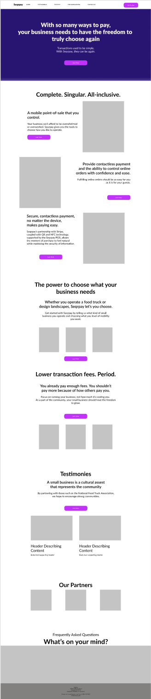
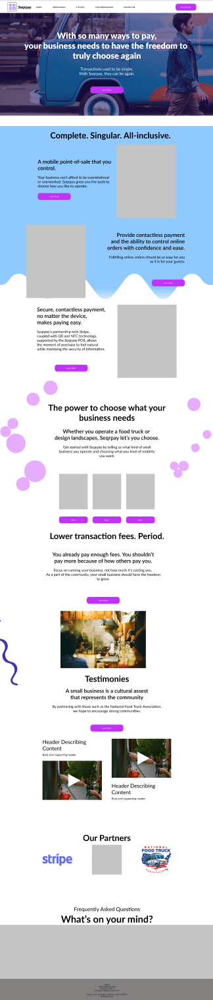
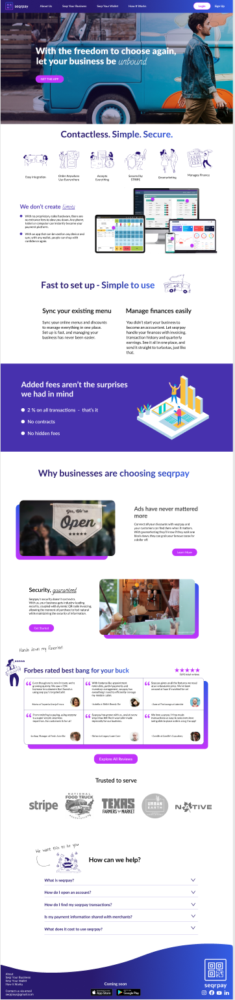

A startup, such as seqrpay, must optimize its time and the way it fails in order to succeed. In two and a half weeks, seqrpay needed a responsive website designed that could clearly inform millennials and small business owners about seqrpay. Our design team worked with stakeholders - identified user needs and their experiences - to design a responsive site ready for development.
UX Design Lead & Front-end Developer - user research and insights, writing site copy, information architecture, visual design, testing.
Brian Rainey – UX Designer
Carl Booker – UX Designer
Monica Garza – UX Designer
Theresa Morgan – UX Designer
The life of a food truck vendor - of a small business owner - is punctuated by high transaction fees, uncompatible ordering solutions, and fragmented payments. Target users had no way to learn about how seqrpay solves this problem for both the small business and their guests. A solution is nothing unless it can be understood.
The process began by researching - deeply - the nuances of the food truck industry, QR codes, millennials, the digital wallet environment, and mobile point-of-sale systems. All of these are core aspects of what seqrpay’s solution is built upon. Amidst this research, we began conducting heuristic analyses of direct and indirect competitors’ websites and offerings. It became critical to ensure that we would be grounding our efforts, thus, two proto personas were developed: one for the consumer or guest and one for the food truck owner or small business owner. These personas - coupled with our research, heuristics and competitor analyses - would become our point-of-departure and would be invaluable as we bagan empathizing with potential users. This empathy would be critical for formulating abstract ideas which would ultimately become the concrete website.
Thus, preliminary written copy was tested with potential users such as two managers of an established fine-dining restaurant in downtown Austin, TX. These users tests - plus supplemental customer needs research from seqrpay startup stakeholders - allowed our design team to understand the language and needs of the user by way of affinity mapping. The affinity map yielded the following themes: control and flexibility, fears of mobile point-of-sale systems, security, staff and workflow needs, merchant needs, and payment processing needs. Empowered by these insights, grounded in our user-personas and research, we then needed to hypothesize what kind of site seqrpay and its users needed and well as the language they spoke.
Proto persona
Storyboard
Insight ideation
Sketching informed by hueristic analysis
Hueristic analysis
The above depicts some of the personally contributed, raw artifacts that would serve as the
foundation of the seqrpay website.
User personas, storyboarding, hueristic evaluations, writing poems, and paper sketching –
all ways that I ground myself when problem solving.
The central focus of this project was clearly conveying seqrpay’s solution.
If we could do this, the other arguable foci – adoptability, comprehension, garnering trust,
images displayed on the site, accents of color – would all follow suit.
So, in a word, the focus of this project was...words.
We found that word choice surrounding mobile point-of-sale systems in the service industry was
polarizing. One challenge we were facing was the damage that early mobile point of sale systems
had done. For example, “mobile point-of-sale” was all that one interviewed manager needed to read.
After that, nothing else of the site’s copy was read.
Copy on mobile viewport
Copy-derived UI
With a firm grasp on the site’s language and how visitors would understand that language, it became easy to use the words to inform UI elements such as illustrations and images to convey meaning for those that might simply skim a site.
The page itself
A page we noted many competitors having and one that would directly answer the questions of curious potential users of seqrpay. Without this page and without decisive copy being used on this page, we would be putting seqrpay at risk of being misunderstood. User tests revealed that this page was specifically useful to testers for understanding the solution that seqrpay could offer. I formulated UX insights of the business and of their guests that informed the copy used on this page.
"an informative, fun, and dynamic site."
Ultimately, we decided that users needed something readable like a brochure-style site that could provide a high-level understanding of seqrpay but also something fun, allowing for deeper exploration that would also serve to keep the site from becoming stagnant as is typical of true brochure sites. By final rounds of testing (specifically for comprehension), we found that users’ comprehension of seqrpay improved by 75%; previously taking as long as one minute for comprehension down to 15 seconds. 15 seconds being the statistical amount of time a user will decide to continue reading or not.
The site now was being brought out of the abstract ideation phase and into the concrete prototyping and testing phase through paper sketches and mid-fidelity prototyping. First we needed to figure out structure of the information architecture. Thus, card sorting was conducted and showed the need for a navigation that would include the logo as a home button, about us link, a business link, a consumer link, a how it works link, and login and sign up options. This sorted navigation would inform the development of the homepage and all external pages; the entire site.
In order to flesh out these pages in a meaningful and grounded way, we implemented feature identification and prioritization methodologies. Finally, we moved into hi-fidelity prototyping.
Thirteen one-on-one target users and more than 25, five-second A/B tests were conducted. UI (user interface) decisions were tested for accessibility as well as how they are psychologically received by millennials - the target user. Iterating on this round of testing led to the final hi-fidelity prototype and overall seqrpay design system.
Without adhereing and dedicating ourselves to learning and iterating quickly,
we could not have succeeded in creating an eight-screen mobile and desktop site.
In lower fidelities, the team and I explored the typical language used to disucss topics
we had identified as necessary thtough card sorting. We affintiy mapped stakholders,
did heuristics of competitor and indirect competitor sites, reviewed actual interviewee
verbiage – restaurant managers, resetaurant staff, and small business owners.
As syntax and paragraphs were iterated on based out this research, the UI of
the site began to emerge naturally which we could then iterate upon and test as we planned
to move into higher fidelity versions of the site.
Team's iterations on site copy
It was my responsibility to write much of the core copy and to conduct revisions of
copy provided by team memebers. This endured for cohesive message and voice across the site.
This role helped develop the most comprehensive and precise message for communicationg
seqrpay's solution to visitors of their site.
The dynamic of leading tasks while also incorporating team suggestions was key to our
success as a team.
Preliminary UI decisions were made in the same way.
For example, during the mood boarding process, each member created a board and then
we voted on elements of each board that we then compiled into a single,
synthesized mood board.
For sketching, each member sketched their vision for the site and we voted
again on how we would proceed. After the intial votes for sketching,
testing and statstics would inform iterations and decisions leading to
the final high-fidelity site prototype.
Low-fi
Low-to-Mid
High-fi (Final)
This was a an extremely exciting and fun project for me to work on as it provided real experience working with stakeholders on something they really cared about and had already been working very hard on. It involved a ton of research, and detailed design work. However, designing for multiple user types – small business owner and consumer – was a constant challenge. Still, it was managable considering the amount of time that we spent in research and ideation. Because our work and dedication to the design thinking process, we handed off a final product that we knew would convey seqrpay's solution and that exceeded stakeholder expectations.